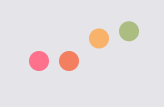

<ion-header>
  <ion-toolbar [color]="isRecording ? 'danger':'primary'">
    <ion-buttons slot="start">
      <ion-back-button color="secondary" defaultHref="home" (click)="back()"></ion-back-button>
    </ion-buttons>
    <ion-title>Your assistant</ion-title>
  </ion-toolbar>
</ion-header>

<ion-content>
  <ion-card class="chatbody" >
    <ion-content #chatBody>
      <ion-card-content>
          <ng-container *ngFor="let message of messages">        
            <div class="message" [ngClass]="{ 'from': message.sentBy === 'bot',
                                              'to':   message.sentBy === 'user' }">           
                                              
                                              
                                              <div *ngIf="message.placeholder">
                                                
                                              </div>
                                              <span class="text">{{ message.content }}</span>
                                              
            </div> 
        </ng-container>
      </ion-card-content>
    </ion-content>
  </ion-card>

  <div class="fixedContent">
    <ion-button color="success" ion-button size="large" (click)="startListening()">Ask me<ion-icon name="mic"></ion-icon></ion-button>
    <!--<ion-button color="success" ion-button size="large" (click)="addMock()">Mock chat<ion-icon name="chatbox-ellipses-outline"></ion-icon></ion-button>-->
  </div>
</ion-content>
